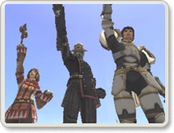
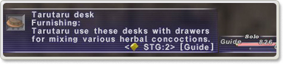
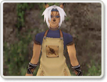
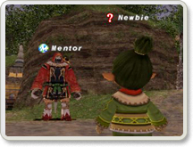

|

Apr. 22, 2004 (JST*) Update Details
|
| *Japan Standard Time |
 |
The first
event for Conflict, "Ballista," has been introduced.
As of this update, Ballista will be run as several stand-alone events.
It is scheduled to become a permanent feature at a later date.
For a description of Ballista, click here.>>
|
|
 |
|
New quests
and battles designed for alliances have been added. |
|
New quests
are available in most nations. |
|
Guild quests
that call for the manufacture of certain items have been implemented.
New NPCs have appeared in each guild to offer the quest to characters who have
the required rank and skill level in the appropriate craft. |
|
Players
will now be able to participate in an event called "Garrison" at several
of the outposts.
A specific item must be traded to the guard in order to begin the event, and then
a level restriction will be imposed depending on the location of the outpost. |
|
A new low-level
quest to obtain the pact for summoning avatars has been implemented. |
|
The amount
of gil required to change titles has been reduced. |
|
The rewards
for the following quests have been adjusted:
- Unexpected Treasure (San d'Oria)
- Lufet's Lake Salt (San d'Oria)
- A Test of True Love (Bastok)
- Nothing Matters (Windurst)
- To Bee or not to Bee? (Windurst) |
|
New Dynamis field
areas have become accessible.
Certain conditions must be fulfilled in order to reserve and enter the two new
areas.
Find details on Dynamis here.>>
|
|
Additional
monsters have been placed in the four existing areas of Dynamis.
Characteristics such as names and behavior have also been changed for some of
the monsters in these areas. |
|
Two new
orb battles have been introduced.
The level restrictions for the orbs are 20 and 30 respectively, with the number
of characters able to enter the battlefield limited to three for both orbs.
- Cloudy Orb (Level Restriction: 20) Obtained by trading 20 beastmen's seals
- Sky Orb (Level Restriction: 30) Obtained by trading 30 beastmen's seals |
|
The moon
orb (obtained by trading 60 beastmen's seals) can now be used at the Qu'Bia Arena
shimmering circle. |
|
An issue
concerning the accumulation of TP with weapon skills that consist of multiple
strikes (i.e. Combo, Penta Thrust, etc.) has been corrected.
TP will be accumulated as usual for that weapon type on the first strike (first
two strikes for hand-to-hand attacks or when wielding two weapons), with each
subsequent strike accumulating 1 TP.
Accordingly, enemies who are the targets of multiple-strike weapon skills will
only gain TP from the first strike (first two strikes for hand-to-hand attacks
or when wielding two weapons).
Also, all elemental weapon skills, except for Starlight and Moonlight (which affect
only the wielder or party members), will now accumulate TP when used. |
|
The following
magic has been added:
-Thunder Spirit SMN Lv.1 (Summons a Thunder Spirit to fight
by your side.)
|
|
A new job
trait called "Subtle Blow" has become available to ninja and monks.
This ability reduces the amount of TP gained by enemies when striking them. |
|
A new job
ability called "Spirit Link" has become available to dragoons.
This ability enables dragoons to sacrifice their own hit points to heal their
wyverns.
Also, if a wyvern at full HP is sent away using the "Dismiss" command,
the "Call Wyvern" ability will be available for use immediately. |
|
The mysterious
"Strange Apparatuses" have become operational. |
|
A new flowerpot
known as the "Arcane Flowerpot" has been added. |
|
Players
will be able to insert their names in the help text of certain items they synthesize
by using the crystals listed below.
This signature will remain with the item when it is traded, bought from a bazaar,
or sent to a player (including deliveries from the Auction House), but will be
lost if purchased directly from the Auction House.
It is possible to see if an item is signed when making purchases from a bazaar.
Also, when perusing a bazaar, other information such as the Dynamis reservation
time of the perpetual hourglass and the size of fish obtained through fishing
will now be visible. |
|
 |
|
- Inferno
Crystal: Has the same effect as a fire crystal
- Glacier Crystal: Has the same effect as an ice crystal
- Cyclone Crystal: Has the same effect as a wind crystal
- Terra Crystal: Has the same effect as an earth crystal
- Plasma Crystal: Has the same effect as a lightning crystal
- Torrent Crystal: Has the same effect as a water crystal
- Aurora Crystal: Has the same effect as a light crystal
- Twilight Crystal: Has the same effect as a dark crystal |
|
New guild-related
furniture and equipment have been added.
|
|
 |
|
The number of items obtained from beastmen treasure caskets
has been increased. |
|
New synthesis
and desynthesis recipes have become available. |
|
New items
have become available for purchase at several of the guild shops. |
|
Various
other new items have been added. |
|
The woodworking
recipe for making "bookshelves" has been adjusted.
The skill level required to synthesize this item has been lowered accordingly. |
|
An issue
where attempts to synthesize a pair of Cursed Breeches resulted in an incorrect
high-quality item has been addressed. |
|
The name
for the following equippable item has been changed:
Lucky Egg --> Fortune Egg |
|
The help text of the
following items has been adjusted:
- Melee Gloves "Reduces TP gained by opponent" --> "Subtle Blow"+(value)
- Melee Hose "Reduces TP gained by opponent" --> "Subtle Blow"+(value)
|
|
The status
of the following item has been adjusted:
Fenrir Stone "Delay:276" --> "Delay:999"
|
|
The following emotes
have been added:
/hurray Give a triumphant cry.
/toss Perform the action of tossing an object.
|
|
A new text
command "/recast" has been added that displays the time remaining until
a spell, etc. can be reused. |
|
A sort
function has been added to the Storage menu. |
|
A character's
footsteps will no longer be heard when using Sneak.
|
|
The name
of a pet's master will be displayed when a pet is targeted. |
|
The limit
for the /wait macro has been extended to sixty seconds. |
|
An ON/OFF
setting for "Effects" has been added to the Config menu. |
|
It is now
possible to place single items on auction directly from an incomplete stack of
items. |
|
When typing
in the input window, the cursor can now be shifted to the start or end of the
line by pressing the Home or End keys. |
|
The camera view is now adjustable when using the Layout function
of the Mog House. |
|
An issue
concerning the consistent reappearance of the "!" mark on the Moghancements
key item has been addressed. |
|
The help
text of the key item Moghancement: Experience, which stated that the item did
not have any effect on Raise spells, has been corrected. |
|
A new system
called "Mentor" that allows veteran adventurers to assist new players
has been implemented.
Characters below level 5 and with less than 5 hours of play time will automatically
gain "New Adventurer" status, signified by an icon displayed next to
the character's name.
|
|
 |
|
The New
Adventurer icon can be removed by selecting "Cancel New Adventurer Status"
under Config in the Help Desk menu.
Please be advised that once New Adventurer Status has been canceled, it cannot
be reinstated.
For details on the Mentor system, click here.>>
|
|
The category
"Key Item" has been added to the auto-translate function. |
|
The following
terms have been added to the auto-translate function: |
|
| Category |
Term |
| Pet
Commands |
Moonlit
Charge
|
| Pet Commands |
Crescent Fang |
| Pet Commands |
Lunar Cry |
| Pet Commands |
Lunar Roar |
| Pet Commands |
Ecliptic Growl |
| Pet Commands |
Ecliptic Howl |
| Pet Commands |
Eclipse Bite |
| Pet Commands |
Howling Moon |
| Avatars |
Fenrir |
| Job Traits |
Subtle Blow |
| Job Abilities |
Spirit Link |
| Place Names |
Dynamis - Beaucedine |
| Place Names |
Dynamis - Xarcabard |
| Trade |
please |
| Text Commands |
/hurray |
| Text Commands |
/toss |
| Text Commands |
/quarry |
| Text Commands |
/sprint |
| Text Commands |
/scout |
| Text Commands |
/recast |
| Text Commands |
/mentor |
| Titles |
Herald |
| Game Terms |
Conflict |
| Game Terms |
Ballista |
| Game Terms |
Rook |
| Game Terms |
Scout |
| Game Terms |
Sprint |
| Game Terms |
Petra |
| Game Terms |
Quarry |
| Game Terms |
Garrison |
| Game Terms |
Expeditionary Force |
| Game Terms |
Gate Breach |
| Check |
Impossible to gauge |
|
|
|